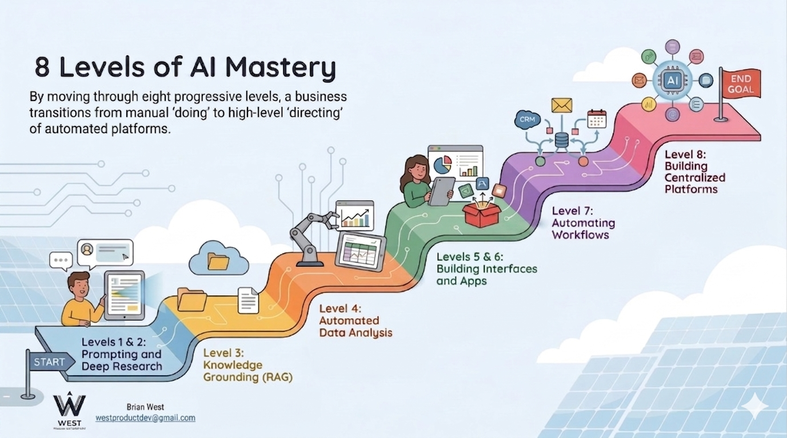

Same four project cards rendered three different ways. Compare how each option handles the mobile screenshot (which is the trickiest fit), the two desktop dashboards, and the AI infographic.
Option A
Mobile screenshot inside a phone bezel. Desktop screenshots inside a browser chrome (with traffic-light dots + URL bar). AI infographic plain. Each medium reads honestly — the form-factor mismatch becomes an intentional design choice.
Mobile-first proposal app replacing a 34-tab legacy spreadsheet. Bundled solar/roofing pricing, e-signatures, digital audit trail.
Full-stack field operations web app with mobile photo documentation and a real-time admin command center.

Hands-on AI automation training delivered to a 10-person team at a solar company in Novato, CA.
Custom data management platform with public-facing climate dashboards and ICLEI ClearPath 2.0 integration.
Option B
Revert from V2 side-by-side back to V1 top-banner. Every card gets a 16:9 image strip at the top. Desktop screenshots use object-position: top so the dashboard header shows. Mobile screenshot becomes a small phone thumbnail centered in the 16:9 area.
Mobile-first proposal app replacing a 34-tab legacy spreadsheet. Bundled solar/roofing pricing, e-signatures, digital audit trail.
Full-stack field operations web app with mobile photo documentation and a real-time admin command center.
Hands-on AI automation training delivered to a 10-person team at a solar company in Novato, CA.
Custom data management platform with public-facing climate dashboards and ICLEI ClearPath 2.0 integration.
Option C
Keeps the side-by-side V2 layout exactly as it is now. Every image uses object-fit: contain, so nothing crops. The mobile screenshot floats centered in a wide gray rectangle; the desktop screenshots show with letterbox bands top & bottom.
Mobile-first proposal app replacing a 34-tab legacy spreadsheet. Bundled solar/roofing pricing, e-signatures, digital audit trail.
Full-stack field operations web app with mobile photo documentation and a real-time admin command center.
Hands-on AI automation training delivered to a 10-person team at a solar company in Novato, CA.
Custom data management platform with public-facing climate dashboards and ICLEI ClearPath 2.0 integration.